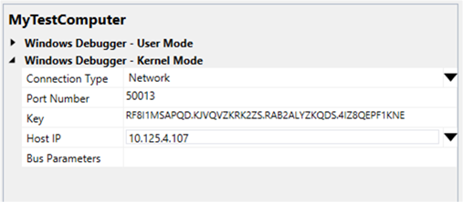

You can use Microsoft Visual Studio to set up and perform kernel-mode debugging over an Ethernet network. To use Visual Studio for kernel-mode debugging, you must have the Windows Driver Kit (WDK) integrated with Visual Studio. For information about how to install the integrated environment, see Windows Driver Development.
As an alternative to using Visual Studio to set up Ethernet debugging, you can do the setup manually. For more information, see Setting Up Kernel-Mode Debugging over a Network Cable Manually.
Debugging over an Ethernet network has the following advantages compared to debugging over other types of cable:
- The host and target computers can be anywhere on the local network.
- It is easy to debug many target computers from one host computer.
- Network cable is inexpensive and readily available.
- Given any two computers, it is likely that they will both have Ethernet adapters. It is less likely that they will both have serial ports or both have 1394 ports.
The computer that runs the debugger is called the host computer, and the computer that is being debugged is called the target computer. The host computer must be running Windows XP or later, and the target computer must be running Windows 8 or later.
Supported network adapters
The host computer can use any wired or wireless network adapter, but the target computer must use a network adapter that is supported by Debugging Tools for Windows. For a list of supported network adapters, see Supported Ethernet NICs for Network Kernel Debugging in Windows 8.1.
Configuring the host and target computer
- Connect the network adapter of the target computer to a network hub or switch using standard CAT5 (or higher-level) network cable. Do not use a crossover cable, and do not use a crossover port in your hub or switch. Connect the network adapter of the host computer to a network hub or switch using a standard cable or a wireless connection.
- Begin configuring your host and target computers as described in Provision a computer for driver deployment and testing (WDK 8.1).
- On the host computer, in Visual Studio, when you come to the Computer Configuration dialog box, select Provision computer and choose debugger settings.
-
For Connection Type, choose Network.

For Port Number, accept the default value or fill in a value of your choice. You can choose any number from 49152 through 65535. The port that you choose will be opened for exclusive access by the debugger running on the host computer. Take care to choose a port number that is not used by any other applications that run on the host computer.
Note The range of port numbers that can be used for network debugging might be limited by your company's network policy. There is no way to tell from the host computer what the limitations are. To determine whether your company's policy limits the range of ports that can be used for network debugging, check with your network administrators.For Key, we strongly recommend that you use the automatically generated default value. However, you can enter your own key if you prefer. For more information, see Creating your own key later in this topic. For Host IP, accept the default value. This is the IP address of your host computer.
If your target computer has only one network adapter, you can leave Bus Parameters empty. If there is more than one network adapter on the target computer, use Device Manager on the target computer to determine the PCI bus, device, and function numbers for the adapter you want to use for debugging. For Bus Parameters, enter b.d.f where b, d, and f are the bus number, device number, and function number of the adapter.
- The configuration process takes several minutes and might automatically reboot the target computer once or twice. When the process is complete, click Finish.
Verifying dbgsettings on the Target Computer
On the target computer, open a Command Prompt window as Administrator, and enter these commands:
bcdedit /dbgsettings
bcdedit /enum
...
key RF8...KNE
debugtype NET
hostip 10.125.5.10
port 50001
dhcp Yes
...
busparams 0.29.7
...Verify that debugtype is NET and port is the port number you specified in Visual Studio on the host computer. Also verify that key is the key that was automatically generated (or you specified) in Visual Studio.
If you entered Bus Parameters in Visual Studio, verify that busparams matches the bus parameters you specified.
If you do not see the value you entered for Bus Parameters, enter this command:
bcdedit /set "{dbgsettings}" busparams b.d.f
where b, d, and f are the bus, device, and function numbers of the network adapter on the target computer that you have chosen to use for debugging.
For example:
bcdedit /set "{dbgsettings}" busparams 0.29.7
Starting the Debugging Session
- On the host computer, in Visual Studio, on the Tools menu, choose Attach to Process.
- For Transport, choose Windows Kernel Mode Debugger.
- For Qualifier, select the name of the target computer that you previously configured.
- Click Attach.
Allowing the debugger through the firewall
When you first attempt to establish a network debugging connection, you might be prompted to allow the debugging application (Microsoft Visual Studio) through the firewall. Client versions of Windows display the prompt, but Server versions of Windows do not display the prompt. Respond to the prompt by checking the boxes for all three network types: domain, private, and public. If you do not get the prompt, or if you did not check the boxes when the prompt was available, you must use Control Panel to allow access through the firewall. Open Control Panel > System and Security, and click Allow an app through Windows Firewall. In the list of applications, use the check boxes to allow Visual Studio through the firewall. Restart Visual Studio.
Creating Your Own Key
To keep the target computer secure, packets that travel between the host and target computers must be encrypted. We strongly recommend that you use an automatically generated encryption key (provided by the Visual Studio configuration wizard) when you configure the target computer). However, you can choose to create your own key. Network debugging uses a 256-bit key that is specified as four 64-bit values, in base 36, separated by periods. Each 64-bit value is specified by using up to 13 characters. Valid characters are the letters a through z and the digits 0 through 9. Special characters are not allowed. The following list gives examples of valid (although not strong) keys:
- 1.2.3.4
- abc.123.def.456
- dont.use.previous.keys
Troubleshooting Tips for Debugging over a Network Cable
Debugging application must be allowed through firewall
Your debugger (WinDbg or KD) must have access through the firewall. You can use Control Panel to allow access through the firewall. Open Control Panel > System and Security, and click Allow an app through Windows Firewall. In the list of applications, use the check boxes to allow Visual Studio through the firewall. Restart Visual Studio.
Port number must be in range allowed by network policy
The range of port numbers that can be used for network debugging might be limited by your company's network policy. To determine whether your company's policy limits the range of ports that can be used for network debugging, check with your network administrator.
Use the following procedure if you need to change the port number.
- On the host computer, in Visual Studio, on the Driver menu, choose Test > Configure Computers.
- Select the name of your test computer, and click Next.
- Select Provision computer and choose debugger settings. Click Next.
- For Port Number, enter a number that is in the range allowed by your network administrator. Click Next.
- The reconfiguration process takes a few minutes and automatically reboots the target computer. When the process is complete, click Next and Finish.
Specify busparams if target computer has multiple network adapters
If your target computer has more than one network adapter, you must specify the bus, device, and function numbers of the network adapter that you intend to use for debugging. To specify the bus parameters, open Device Manager, and locate the network adapter that you want to use for debugging. Open the property page for the network adapter, and make a note of the bus number, device number, and function number. In an elevated Command Prompt Window, enter the following command, where b, d, and f are the bus, device and function numbers in decimal format:
bcdedit -set "{dbgsettings}" busparams b.d.f
Reboot the target computer.
Related topics
- Setting Up Kernel-Mode Debugging in Visual Studio
- Supported Ethernet NICs for Network Kernel Debugging in Windows 8.1
- Supported Ethernet NICs for Network Kernel Debugging in Windows 8